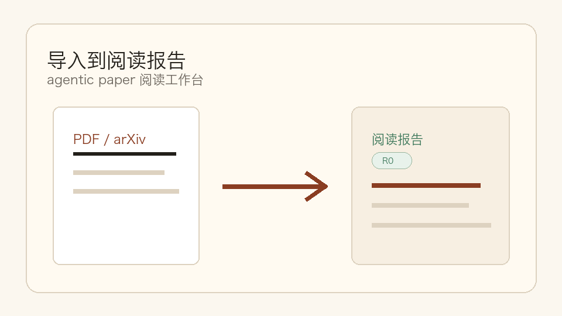
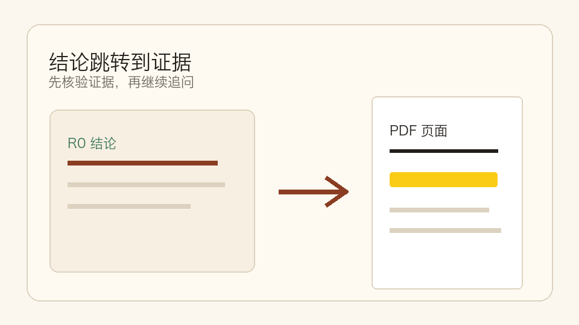
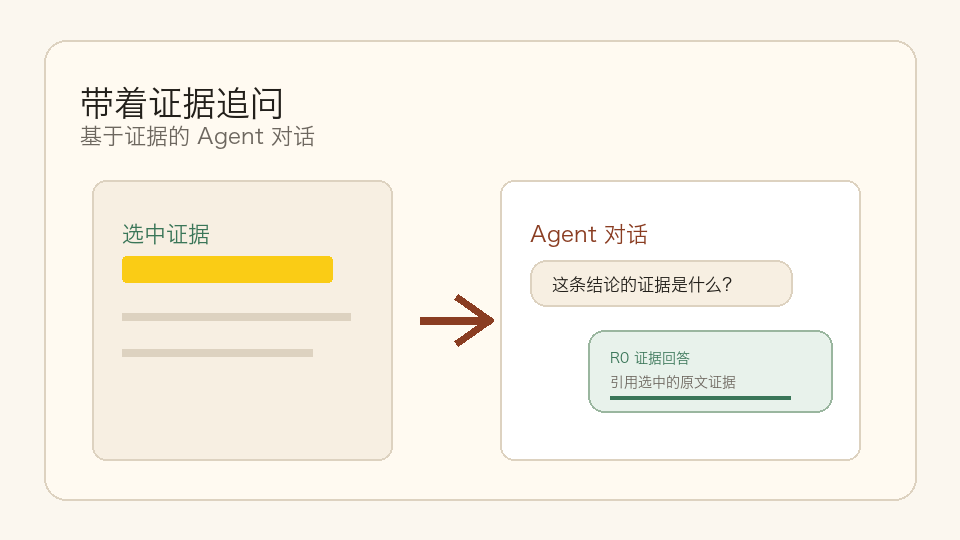
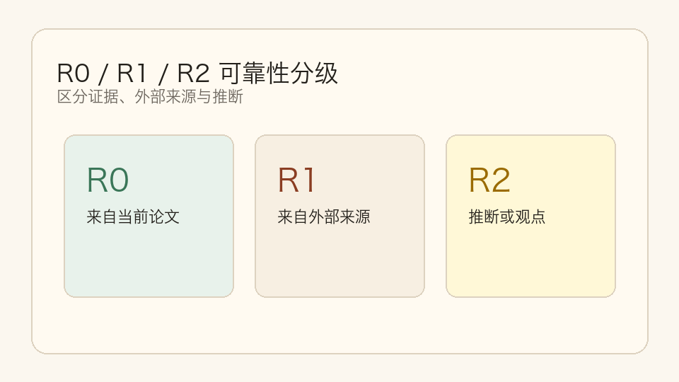
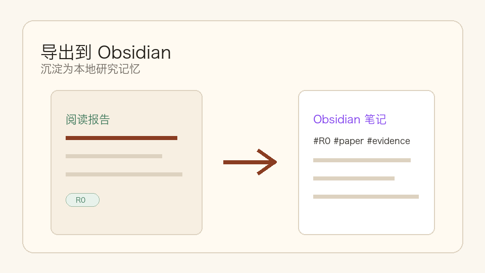

Paperflow
证据优先的 agentic paper 阅读工作台。
用于阅读论文、核验证据、追问 Agent、沉淀知识。Paperflow 不是普通 PDF 阅读器：每个生成结论都带 R0 / R1 / R2 可靠性标记，并尽可能回到 PDF 原文证据。


证据优先的 agentic paper 阅读工作台。
用于阅读论文、核验证据、追问 Agent、沉淀知识。Paperflow 不是普通 PDF 阅读器：每个生成结论都带 R0 / R1 / R2 可靠性标记，并尽可能回到 PDF 原文证据。


flowchart LR
importPdf["导入 PDF 或 arXiv"] --> readingReport["Agent 阅读报告"]
readingReport --> evidenceHighlight["PDF 证据高亮"]
evidenceHighlight --> agentChat["带 R0/R1/Web 上下文追问"]
agentChat --> obsidianExport["导出到 Obsidian"]Paperflow 把一篇论文变成可追溯的研究工作台：先生成结构化报告，再核验 PDF 证据，然后带着证据追问 Agent，最后沉淀到 Obsidian。
 |
 |
 |
 |
 |
| 导入到阅读报告 | 结论跳转证据 | 带证据追问 | 可靠性分级 | 沉淀到知识库 |
用一篇论文跑完整流程：
产品原则很简单：先报告，后聊天；始终回到证据。
v0.1.x 格式。需要 Python 3.9+、Node.js 18+，以及用于真实 Agent 解析的 DeepSeek API Key。
git clone https://github.com/shiml20/PaperFlow.git
cd PaperFlow
export DEEPSEEK_API_KEY="your-deepseek-api-key"
cd paperflow
./run-dev.sh --install然后打开 http://127.0.0.1:5173，导入 PDF 或 arXiv
URL，进入 Workspace。
如果依赖已经安装过：
export DEEPSEEK_API_KEY="your-deepseek-api-key"
cd paperflow
./run-dev.shPaperflow 当前只支持 DeepSeek 作为 Agent API provider。
最快方式是设置 DEEPSEEK_API_KEY。
| 变量 | 必需 | 默认值 | 作用 |
|---|---|---|---|
DEEPSEEK_API_KEY |
是 | 无 | 后端 PaperAgent 使用的 DeepSeek API Key。 |
DEEPSEEK_BASE_URL |
否 | https://api.deepseek.com/beta |
DeepSeek-compatible chat completions endpoint root。 |
DEEPSEEK_MODEL |
否 | deepseek-v4-flash |
阅读报告默认模型。 |
DEEPSEEK_REPORT_READ_TIMEOUT |
否 | 90 |
报告生成 read timeout，单位秒。 |
DEEPSEEK_CONFIG_PATH |
否 | ~/.deepseek/config.toml |
自定义配置文件路径。 |
配置文件示例：
api_key = "your-deepseek-api-key"
base_url = "https://api.deepseek.com/beta"
model = "deepseek-v4-flash"旧 DeepSeek-TUI 配置里的 default_text_model 不会覆盖
Paperflow 的默认报告模型。除非显式设置 DEEPSEEK_MODEL 或
model，否则默认使用 deepseek-v4-flash。
没有 DeepSeek Key 时，后端会报告
Agent not configured，无法生成真实 R0/R1 阅读报告。
cd paperflow/backend
python3 -m venv .venv
. .venv/bin/activate
pip install -e '.[dev]'
export DEEPSEEK_API_KEY="your-key"
export DEEPSEEK_MODEL="deepseek-v4-flash"
export DEEPSEEK_REPORT_READ_TIMEOUT="90"
uvicorn app.main:app --reloadcd paperflow/frontend
npm install
npm run dev打开 http://localhost:5173。
Paperflow 也提供 Textual 终端 UI，连接同一个后端。
cd paperflow/backend && . .venv/bin/activate
pip install -e ../tui
paperflow-tui
# 或
PAPERFLOW_BASE_URL=http://127.0.0.1:8000 paperflow-tui
# 或
python -m paperflow_tui常用快捷键：
| 位置 | 按键 | 动作 |
|---|---|---|
| Library | i |
导入本地 PDF |
| Library | a |
导入 arXiv URL / ID |
| Library | o / Enter |
打开选中论文 Workspace |
| Library | r |
重新运行 PaperAgent |
| Library | R |
刷新 library 和 agent status |
| Workspace | j / k / arrows |
导航 claims |
| Workspace | Enter |
查看 evidence |
| Workspace | a |
提出 R0 / R1 / R2 聚焦问题 |
| Workspace | 1 |
运行 R1 related-work search |
| Workspace | 2 |
打开 Field Map |
| Workspace | s |
保存 / 更新 Obsidian 笔记 |
| Workspace | b / Esc |
返回 Library |
覆盖全文 50%、覆盖全文 100% · 8 chunks
等状态。location_status。/chat 使用 DeepSeek chat agent，读取 report + selected
evidence + R1 cache，并保留 report-grounded fallback。/chat/stream 提供 SSE step/final events。| 等级 | 含义 | 示例 |
|---|---|---|
| R0 | 严格来自当前论文。数字不能跨设置推断或比较。 | "The model is trained on 8xA100 for 72 hours." |
| R1 | 来自其他论文 / 外部来源，需要记录来源论文、venue、year、URL。 | "This benchmark was introduced in paper X." |
| R2 | 推断、趋势判断、研究观点，必须带 R2 标签。 | "This direction is likely to converge with diffusion priors." |
可靠性不是附加 metadata，而是 UI badge、JSON 持久化、Obsidian
#R0 / #R1 / #R2 标签和 Agent
prompt contract 的核心。
Paperflow 有两个前端，共用同一个后端 Agent harness：
┌──────────────────────────────┐ ┌──────────────────────────────────┐
│ Web Frontend (React + Vite) │ │ Backend (FastAPI) │
│ - Library-first home │ ─── REST ───► │ - PaperStorage (SQLite + files) │
│ - Report-first Workspace │ │ - PDF parser (PyMuPDF) │
│ - Agent rail + evidence │ │ - ReportService │
│ - PDF viewer │ │ - PaperAgent (DeepSeek client) │
└──────────────────────────────┘ └──────────────┬───────────────────┘
│
┌──────────────────────────────┐ │
│ TUI (Textual + httpx) │ ─── REST ────────────────────►│
│ - Same Library + Workspace │ │
│ - R0/R1/R2 badges │ │
│ - Keyboard-driven │ │
└──────────────────────────────┘ ▼
┌──────────────────────────┐
│ Local Data │
│ - PDFs │
│ - report JSON │
│ - Obsidian vault notes │
│ - SQLite metadata │
└──────────────────────────┘Agent harness 只在后端。Web 前端和 TUI 都是薄 HTTP client。
技术栈： Python 3.9+ · FastAPI · Pydantic · PyMuPDF · httpx · pytest · React · TypeScript · Vite · Vitest · Textual · Rich · SQLite · DeepSeek API。
用户数据统一存放在项目根目录的 data/，默认 git-ignored。
无论 backend 从仓库根目录、paperflow/ 还是
paperflow/backend/ 启动，都会使用这一个位置。
只有在你明确想覆盖本地数据目录时，才需要设置
PAPERFLOW_DATA_DIR。
每个 R0 claim 的基本结构：
{
"id": "claim-id",
"text": "中文解释",
"reliability": "R0",
"evidence": [
{
"source": "paper.pdf",
"quote": "PDF 原文引用",
"page": 3,
"section": "方法",
"bbox": null,
"location_status": "page_and_quote"
}
],
"uncertainty": null
}完整阅读报告覆盖元数据、执行摘要、任务、数据集、基准与指标、方法、模型规模、输入输出、计算与训练、关键结果、优势、局限、相关工作结论和证据索引。
PaperFlow/
├── README.md
├── README.zh-CN.md
├── index.html
├── LICENSE
├── assets/
│ ├── README.html ← GitHub Pages 友好的 README 页面
│ ├── favicon.svg
│ └── paperflow_banner.png
├── data/ ← 本地用户数据，git-ignored
├── design_docs/ ← 本地设计 / PRD 笔记
└── paperflow/
├── run-dev.sh ← 启动 backend + frontend
├── backend/ ← FastAPI + PaperAgent harness
├── frontend/ ← React + Vite + TypeScript web client
└── tui/ ← Textual terminal client# Backend
cd paperflow/backend
. .venv/bin/activate
pytest -q
# Frontend
cd ../frontend
npm test
npm run build
# TUI
cd ../tui
pytest -qPaperflow 还在早期，但 reliability contract 已经稳定。适合优先贡献的方向：
请保持 PR 与可靠性契约一致：任何产生事实的 UI 表面，都应该能表示为 R0 / R1 / R2 并带证据。
Paperflow 使用 PolyForm Noncommercial License 1.0.0。
LICENSE 中的必要声明。商业使用请在 GitHub 仓库 开 issue 讨论商业授权。
Copyright © 2026 shiml20 and Paperflow contributors.
如果 Paperflow 对你的研究流程有帮助，欢迎 star。
发版历史与里程碑细节见 STATUS.zh-CN.md。